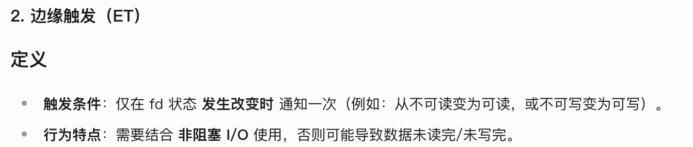

IO多路复用
Introduce
IO 多路复用好像出现的频率比较高，那么它到底是什么呢？我记得在询问 Java 的 NIO 的模型的时候，就有涉及到 IO多路复用，同时在 Redis 中也有提到过，那么它到底是什么呢？
下面是对 IO 多路复用的比较详细的讲解:
简单的介绍一下 IO 多路复用，其实就是一种同步的IO模型，通过一个线程来监听多个文件的句柄，一旦一个句柄准备就绪，那么就会通知应用程序进行相应的读写操作。如果没有文件句柄就会阻塞应用程序，交出CPU 给其他的应用程序。
- 多路 : 网络连接
- 复用 : 一个线程监听多个文件句柄
什么是句柄呢？
句柄 通常指的是文件描述符，是用来指对资源进行操作的一个标识符。
1 2 3 4 5 6 7 8 9 10 11 12 13 14 | |
简单的来说就是，服务器使用单线程来通过 select/epoll 等系统调用获取 fds 列表。遍历所有事件的 fd 来进行操作，使其可以支持更多的并发请求。
Select
具体原理: select 函数在阻塞过程中，主要依赖于一个名为 fd_set 的数据结构来表示文件描述符集合。通过向 select 函数传递待检测的 fd_set 集合，可以指定需要检测哪些文件描述符。fd_set 结构一般是通过使用宏函数以及相关操作进行初始化和处理。
fd_set 结构可以用于传递三种不同类型的文件描述符集合，包括读缓冲区、写缓冲区和异常状态。通过将文件描述符放入相应的集合中，程序员可以选择性地检查特定类型的事件或操作。通过使用传出变量，程序员可以获取与就绪状态对应的文件描述符集合，并相应地处理与就绪内容相关的操作。
以一言蔽之就是，select 函数的最终目的就是将多个IO请求进行集中的处理分类，把准备就绪的文件放入对应的集合中，然后等待以此的处理。
1 2 | |
nfds: 需要监视的最大文件描述符+1readfds: 可读性检查的文件描述符集合writefds: 可写性检查的文件描述符集合exceptfds: 异常性检查的文件描述符集合timeout: 超时时间,也可以设置为NULL,如果为NULL则会一直阻塞
函数的返回值:
>0: 返回的是有事件发生的文件描述符总数0: 超时 -> 在一个时间循环范围内，没有准备就绪的文件描述符-1: 出错
实现
在了解过具体的原理之后，看一下select 相关的API:
1 2 3 4 | |
FD_CLR: 从集合中清除一个文件描述符FD_ISSET: 检查一个文件描述符是否在集合中FD_SET: 将一个文件描述符加入集合中FD_ZERO: 清空集合
因为我们的 select 函数每次都只能返回一次集合，在处理完之后，需要将集合及时情况，否则会影响下一轮的select操作。
Poll
Poll 也是一种多路复用的机制，类似于 Select,但是更加的高效和灵活。poll采用的是轮询的方式，在用户态和内核态进行交互，但是不同的是，poll支持更大的文件描述符集合。poll只支持在Linux上进行，而不是像select一样允许跨平台。
实现
Poll 是怎么做到无上限的呢？因为 select 对文件数量的限制是通过 bitmap进行的，但是 poll采用了结构体的方式来存放fd:
1 2 3 4 5 6 7 8 9 10 11 | |
我们看上图，首先定义了一个结构体 pollfd,里面有几个成员变量:
fd: 这个文件的文件描述符，也就是等待需要进行的操作events: 表示的是 poller 关心的事件， 用户程序希望内核关心的事件revents: 表示的是这个文件实际发生的事情，在poll返回时候被内核所修改的内核告诉用户程序关心的事件
poll 函数会阻塞，直到发生了下面的三件事:
- 有一个或者多个文件描述符准备好监听的事件
- 指定的超时到达
- 发生了一个错误
最终的处理是 遍历 revents 值来执行相应的操作的
Epoll
Epoll 是 Linux 下的一种I/O 多路复用的机制，可以高效处理大量并发连接。
Epoll 模型使用一个文件描述符 epoll fd 来管理其他的文件描述符，在epoll fd上注册了我们需要关心的有哪些文件描述符。
Epoll 的优势在于 事件驱动，也就是说避免了无效的轮询，只有在事件发生的时候，才会进行轮询。
- 高效
- 更快的响应速度
- 可扩展性好，使用了无锁的结构，将连接的集合管理交给了内核处理，并利用回调函数来处理连接读写的事件，减少了锁的竞争。
实现
Epoll 使用了红黑树来存储和管理注册事件
epoll_ctl函数调用注册的事件的时候，会将文件描述符和对应的事件加入到红黑树中，进行统一的管理和维护。- 当有事件发生的时候，
epoll调用epoll_wait函数去查询红黑树上已经注册的事件，如果有匹配的事件发生，那么就会通知应用程序去处理。 epoll将事件的查询和插入、删除等操作的时间复杂度降低到 \(O(\log N)\)
1 2 3 4 5 6 7 8 9 10 11 12 13 14 15 16 17 18 19 20 21 22 23 24 25 26 27 28 29 30 31 32 | |
events数组是由 event_wait 直接返回的，映射了内核数据，减少了拷贝的开销.
工作模式

-
边缘触发 Edge Triggered (ET) : 只有在状态发生变化的时候才会通知应用程序，这样可以减少事件的触发次数，提高效率。
- 适合高并发的IO场景
- 但是切记，需要一次性的把数据处理完，否则会发生数据丢失的情况
- 必须使用非阻塞IO
-
水平触发 Level Triggered (LT) : 只要文件描述符上有事件发生，就会通知应用程序，这样会导致事件的触发次数增多，效率会降低。（默认的就是这个 有事件就不停的通知）
- 适合低并发的IO场景